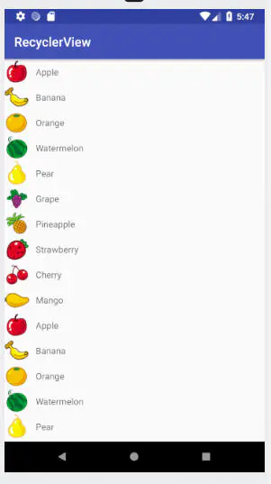
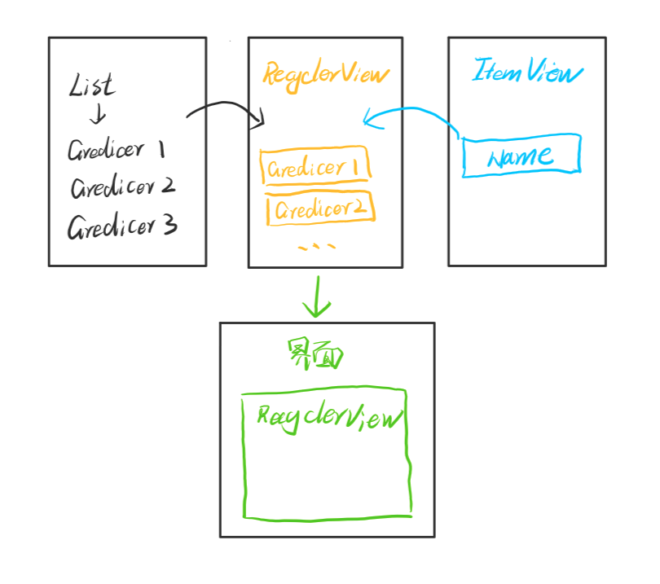
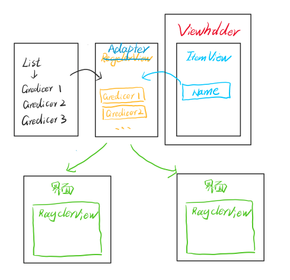
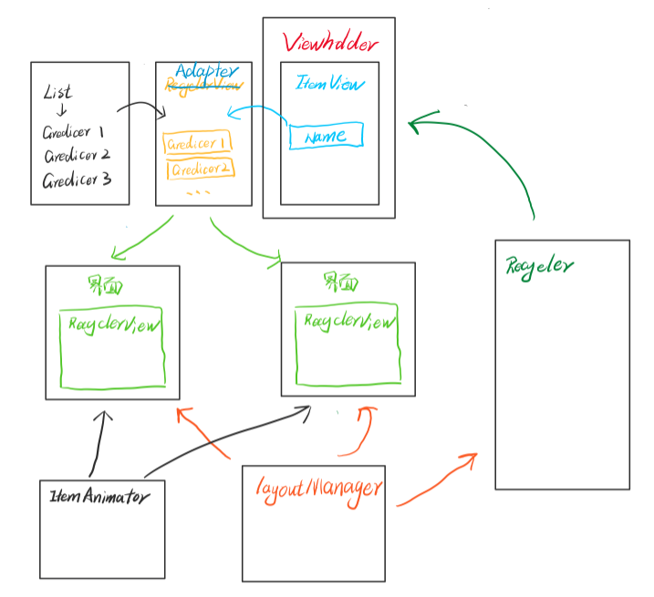

RecyclerView是一个Android中列表展示的控件，可以实现各种列表的展示，包括了多内容、多类型、横向竖向、多列、动画、点击长按等各种效果
前言
相信RecyclerView对Android初学者来说是一个比较难理解的部分，因为它会涉及到很多部分
比如我在最开始的时候就很难理解为什么要用layoutManager和adapter，我想直接定义子布局，再定义子元素内容，最后一个列表赋值到RecyclerView不就可以了吗
这篇文章主要是为了对RecyclerView有更好的理解，可以真正明白为什么要这样做，如果可以回答上来下面的问题的话，说明对RecyclerView是有比较清晰的理解了
ReyclerView有几部分？为什么要有这几部分？
参考
正文
直接实现
如果想先尝试实现效果，尽快可以看到一个可用的，简单的列表展示，可以直接点击参考链接中的第一个，效果如下：

讲解
组成部分
RecyclerView需要了解以下六部分：
LayoutManager：负责Item布局的显示管理
Adapter：负责每一个Item的视图创建
ViewHolder：负责Item视图的子布局
Recycler：负责View的缓存处理
ItemDecoration：负责Item视图添加子View，例如添加分割线
ItemAnimator：负责处理动画效果
示例
现在Gredicer，也就是小G，有了一个想法
“在一个界面上如果有多个相同类别的显示内容，一个一个复制太麻烦了，要是能直接读取列表里的内容显示出来就好了”
此时，RecyclerView的雏形就出来了：
通过List来定义一个存放名字的列表
通过ItemView来定义名字的布局，即用TextView显示
通过RecyclerView来整合，并且在界面中引用即可展示

这个时候其实基本的思路有了，但是会有几个问题
如果这样定义的话，如果是单一的文本和TextView对应还好，但是不可能说每次我都是名字直接显示，假如是性别或者年龄，可能需要做判断，比如没有输入的话我就显示“无”，或者对List中的内容做处理再显示到ItemView中
内容和ItemView显示界面有大量的绑定，比如我一个商品列表，里面有很多图片和文字，我可能会需要一个专门的地方来做这些事
我想让每个Item可以点击或者长按，并且可以有相应的显示，比如跳转或者弹窗显示相应的内容
每个RecyclerView对应一个显示效果的话太麻烦了，我想只写一次定义，可以在很多地方用
OK，有了问题就要解决
于是，小G又想到了，我可以专门用VIewHolder来做UI和内容的绑定，同时也解决了内容判断处理的问题，然后专门用一个适配器Adapter，把这一整个部分，包括点击或者其他的事件都写在这里，RecyclerView只需要展示就行了，在各个界面写RecyclerView，然后如果需要什么样的效果就绑定Adapter就可以了
很好，这样的话整个结构就变成了如下所示

但是但是，还是会有问题在的，比如：
现在RecyclerView是怎么排列的啊？竖着还是横着？是几行几列啊？
现在如果我删掉List中的几个Item，界面怎么更新啊？
至于第一个，小G想到了好办法，要想保证每个RecyclerView不同的方向，并且跟数据还没关系，那我就再定一个东西呗，名字就叫LayoutManager，用它来定义通用的几个布局，然后直接让RecyclerView来使用它就好啦！
第二个，小G就犯难了，这中间有好几个关键的问题
需要知道删掉的是哪个
删掉之后在保证数据更新的同时，进行逻辑的再次排序并进行显示
然后…..又延伸出来几个问题
显示的时候肯定不能直接显示啊，至少得有动画，比如竖着5个，删掉第四个，第五个应该是移动上去的，而不是直接整个屏幕刷新
动画要定义通用接口，让其他人能自定义动画
如果有些内容不在屏幕里面，比如屏幕总共显示了5个，删掉第五个，需要知道第六个的位置（横向还是竖向，一行还是两行）然后在从屏幕的对应位置进入
啊这，啊这
看来还是得加
“既然动画的话，就专门加个ItemAnimator吧，然后逻辑跟LayoutManager一样，需要独立性”
“另一个，我在LayoutManager和ViewHolder之间再加一个缓存Recycler，用这个提前来计算和存储增删改查情况下的布局，到时候只需要从原有布局→动画→缓存布局或者反过来就好啦”
具体示例如下：

到现在基本的RecyclerView就完成了！
小G高兴的去吃饭了
结尾
到这里本文就结束了，希望大家能对RecyclerView能有一个比较好的认识
不得不说，Google的工程师还是很厉害的，需要不断的学习很多好的思路和逻辑，只有这样才能在未来走出自己的路
小G-Gredicer